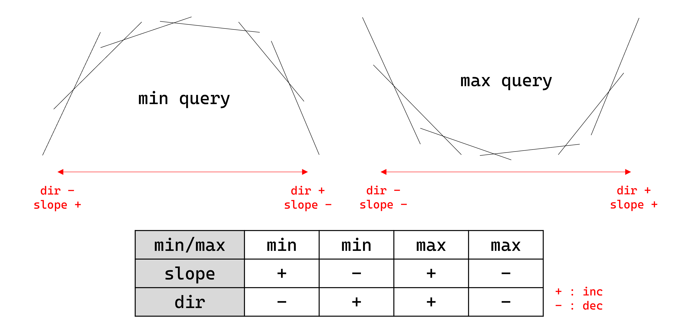

Convex Hull Trick¶
Problem¶

위 그림과 같이 문제 상황에 따라 min/max (최소/최대 쿼리), slope (삽입되는 직선들의 기울기 증가/감소), dir (삽입 직선들의 교점의 x좌표 증가/감소)이 결정된다.
- Push : 일차함수 \(y=ax+b\)를 추가한다.
단, 삽입되는 기울기 \(a\)는
slope에 따라 증가하거나 감소해야 한다. - Query : 지금까지 추가된 일차함수들 중 특정 \(x\)에서의 함숫값들 중
min/max에 따라 최솟값 혹은 최댓값을 구한다. - Query2 : 지금까지 추가된 일차함수들 중 특정 \(x\)에서의 함숫값들 중
min/max에 따라 최솟값 혹은 최댓값을 구한다. 단, 쿼리로 주어지는 \(x\)는dir에 따라 증가하거나 감소해야 한다.
Algorithm¶
-
Push
최적의 직선들 (upper / lower convex hull)을 스택으로 관리한다. 이 때,
dir이 증가한다면cross(V[i-1], V[i]) < cross(V[i], V[i+1]), 감소한다면cross(V[i-1], V[i]) > cross(V[i], V[i+1])을 강제한다. 새로운 직선을 추가할 때, 불변식을 만족시키지 않는 직선들을 스택의 위쪽에서 하나씩 제거한 후, 새로운 직선을 스택에 추가한다.Complexity
ammortized \(O(1)\)
-
Query
쿼리로 주어진 \(x\)를 이용하여 삽입된 직선들 사이의 교점들에 대한 이분탐색을 통해 최적의 직선을 찾고, 함숫값을 구한다.
Complexity
\(O(logN)\)
-
Query2
직선들의 교점이 삽입되는 방향
dir과 쿼리로 주어지는 \(x\)의 방향이 같으니, 한 번 최적해가 아닌 직선은 앞으로도 최적해가 될 수 없음을 이용한다. 직선들을 deque로 관리하여, 가장 앞의 교점과 \(x\)를 비교하여 최적이 아닌 직선을 하나씩 앞에서 제거한 후, 최적 함숫값을 구한다.Complexity
Ammortized \(O(1)\)
Code¶
Details¶
- 문제 상황에 따라
min/max(최소/최대 쿼리),slope(삽입되는 직선들의 기울기 증가/감소),dir(삽입 직선들의 교점의 x좌표 증가/감소)이 결정된다. Frac cross(const Line &p, const Line &q) {}: 두 직선의 교점의 x좌표를Frac자료형으로 리턴함- 모든 쿼리들이 정수라면,
Frac대신dir이 증가한다면divfloor,dir이 감소한다면divceil으로 대체할 수 있음
- 모든 쿼리들이 정수라면,
void push(Line p) {}: 일차함수 \(y=ax+b\)를 추가함- 삽입되는 기울기 \(a\)는
slope에 따라 증가하거나 감소해야함 dir이 증가한다면cross(V[i-1], V[i]) < cross(V[i], V[i+1]), 감소한다면cross(V[i-1], V[i]) > cross(V[i], V[i+1])를 만족함
- 삽입되는 기울기 \(a\)는
ll query(ll x) {}: 특정 \(x\)에서의 함숫값들 중min/max에 따라 최솟값 혹은 최댓값을 리턴함ll query2(ll x) {}: 특정 \(x\)에서의 함숫값들 중min/max에 따라 최솟값 혹은 최댓값을 리턴함- 쿼리로 주어지는 \(x\)는
dir에 따라 증가하거나 감소해야 함
- 쿼리로 주어지는 \(x\)는